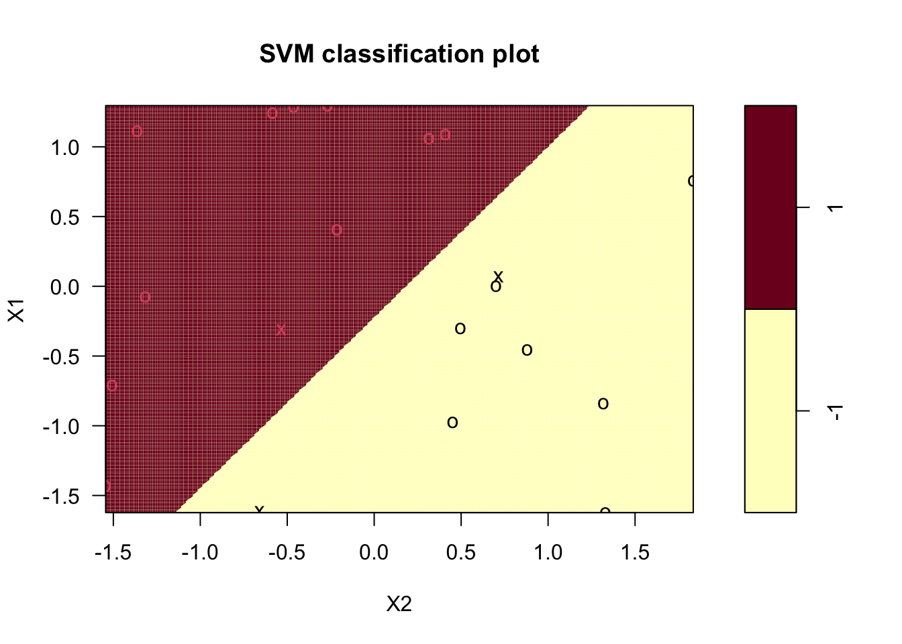

5 Support Vector Machine (SVM)
Etant donnée un échantillon \((x_1,y_1),\dots,(x_n,y_n)\) où les \(x_i\) sont à valeurs dans \(\mathbb R^p\) et les \(y_i\) sont binaires à valeurs dans \(\{-1,1\}\), l’approche SVM cherche le meilleur hyperplan en terme de séparation des données. Globalement on veut que les 1 se trouvent d’un coté de l’hyperplan et les -1 de l’autre. Dans cette partie on propose d’étudier la mise en œuvre de cet algorithme tout d’abord dans le cas idéal où les données sont séparables puis dans le cas plus réel où elles ne le sont pas. Nous verrons ensuite comment introduire de la non linéarité ne utilisant l’astuce du noyau.
5.1 Cas séparable
Le cas séparable est le cas facile : il correspond à la situation où il existe effectivement un (même plusieurs) hyperplan(s) qui sépare(nt) parfaitement les 1 des -1. Il ne se produit quasiment jamais en pratique mais il convient de l’étudier pour comprendre comment est construit l’algorithme. Dans ce cas on cherche l’hyperplan d’équation \(\langle w,x\rangle+b=w^tx+b=0\) tel que la marge (qui peut être vue comme la distance entre les observations les plus proches de l’hyperplan et l’hyperplan) soit maximale. Mathématiquement le problème se réécrit comme un problème d’optimisation sous contraintes :
\[ \min_{w,b}\frac{1}{2}\|w\|^2 \tag{5.1}\]
\[ \text{sous les contraintes } y_i(w^tx_i+b)\geq 1,\ i=1,\dots,n. \]
La solution s’obtient de façon classique en résolvant le problème dual et elle s’écrit comme une combinaison linéaire des \(x_i\) \[w^\star=\sum_{i=1}^n\alpha_i^\star y_ix_i.\] De plus, les conditions KKT impliquent que pour tout \(i=1,\dots,n\):
- \(\alpha_i^\star=0\)
ou
- \(y_i(x_i^tw+b)-1=0.\)
Ces conditions impliquent que \(w^\star\) s’écrit comme une combinaison linéaire de quelques points, appelés vecteurs supports qui se trouvent sur la marge. Nous proposons maintenant de retrouver ces points et de tracer la marge sur un exemple simple.
On considère le nuage de points suivant :
n <- 20
set.seed(123)
X1 <- scale(runif(n))[,1]
set.seed(567)
X2 <- scale(runif(n))[,1]
Y <- rep(-1,n)
Y[X1>X2] <- 1
Y <- as.factor(Y)
donnees <- tibble(X1,X2,Y)
p <- ggplot(donnees)+aes(x=X2,y=X1,color=Y)+geom_point()
p
La fonction svm du package e1071 permet d’ajuster une SVM :
library(e1071)
mod.svm <- svm(Y~.,data=donnees,kernel="linear",cost=10000000000)Récupérer les vecteurs supports et visualiser les sur le graphe (en utilisant une autre couleur par exemple). On les affectera à un tiible dont les 2 premières colonnes représenteront les valeurs de \(X_1\) et \(X_2\) des vecteurs supports.
Les vecteurs supports se trouvent dans la sortie
indexde la fonction svm :ind.svm <- mod.svm$index sv <- donnees |> slice(ind.svm) sv ## # A tibble: 3 × 3 ## X1 X2 Y ## <dbl> <dbl> <fct> ## 1 -1.61 -0.660 -1 ## 2 0.0696 0.714 -1 ## 3 -0.311 -0.533 1 p1 <- p+geom_point(data=sv,aes(x=X2,y=X1),color="blue",size=2)On peut ainsi représenter la marge en traçant les droites qui passent par ces points :
sv1 <- sv[,2:1] b <- ((sv1[1,2]-sv1[2,2])/(sv1[1,1]-sv1[2,1])) |> as.numeric() a <- (sv1[1,2]-b*sv1[1,1]) |> as.numeric() a1 <- (sv1[3,2]-b*sv1[3,1]) |> as.numeric() (p2 <- p1+geom_abline(intercept = c(a,a1),slope=b,col="blue",linewidth=1))
Retrouver ce graphe à l’aide de la fonction plot.
plot(mod.svm,data=donnees,grid=250)
Rappeler la règle de décision associée à la méthode SVM. Donner les estimations des paramètres de la règle de décision sur cet exemple. On pourra notamment regarder la sortie
coefde la fonction svm.Une fois \(w^\star\) et \(b^\star\) obtenus, la règle s’écrit \[g(x)=1_{\langle w^\star,x\rangle+b^\star\leq 0}-1_{\langle w^\star,x\rangle+b^\star >0}.\]
L’objet
mod.svm$coefscontient les coefficients \(\alpha_i^\star y_i\) pour chaque vecteur support. On peut ainsi récupérer l’équation de l’hyperplan et faire la prévision avecw <- apply(mod.svm$coefs*donnees[mod.svm$index,1:2],2,sum) #ou w <- t(mod.svm$coefs) %*% mod.svm$SV b <- -mod.svm$rho b ## [1] -0.4035113L’hyperplan séparateur a donc pour équation : \[-1.74x_1+2.12x_2-0.40=0.\] On peut retrouver directement cette équation avec la fonction coef :
(cc <- coef(mod.svm)) ## (Intercept) X1 X2 ## -0.4035113 -1.7450996 2.1360294On peut donc rajouter la règle de décision :
p2+geom_abline(intercept = -cc[1]/cc[2],slope = -cc[3]/cc[2],linewidth=1)On dispose d’un nouvel individu \(x=(-0.5,0.5)\). Expliquer comment on peut prédire son groupe.
Il suffit de calculer \(\langle w^\star,x\rangle+b\) et de prédire en fonction du signe de cette valeur :
newX <- data.frame(X1=-0.5,X2=0.5) sum(w*newX)+b ## [1] 1.537053On prédira le groupe
-1pour ce nouvel individu.Retrouver les résultats de la question précédente à l’aide de la fonction predict. On pourra utiliser l’option
decision.values = TRUE.predict(mod.svm,newX,decision.values = TRUE) ## 1 ## -1 ## attr(,"decision.values") ## -1/1 ## 1 1.537053 ## Levels: -1 1Plus cette valeur est élevée, plus on est loin de l’hyperplan. On peut donc l’interpréter comme un score.
Obtenir les probabilités prédites à l’aide de la fonction predict. On pourra utiliser
probability=TRUEdans la fonction svm.mod.svm1 <- svm(Y~.,data=donnees,kernel="linear",cost=10000000000,probability=TRUE) predict(mod.svm1,newX,decision.values=TRUE,probability=TRUE) ## 1 ## -1 ## attr(,"decision.values") ## -1/1 ## 1 1.537053 ## attr(,"probabilities") ## -1 1 ## 1 0.8294474 0.1705526 ## Levels: -1 1Comme souvent, il est possible d’obtenir une estimation des probabilités d’être dans les groupes
-1et1à partir du score, il “suffit” de ramener ce score sur l’échelle \([0,1]\) avec des transformations de type logit par exemple. Pour la svm, ces probabilités sont obtenues en ajustant un modèle logistique sur les scores \(S(x)\) :\[ P(Y=1|X=x)=\frac{1}{1+\exp(aS(x)+b)}. \]
On peut retrouver ces probabilités avec :
score.newX <- sum(w*newX)+b 1/(1+exp(-(mod.svm1$probB+mod.svm1$probA*score.newX))) ## [1] 0.1705526
5.2 Cas non séparable
Dans la vraie vie, les groupes ne sont généralement pas séparables et il n’existe donc pas de solution au problème équation 5.1. On va donc autoriser certains points à être :
- mal classés
et/ou
- bien classés mais à l’intérieur de la marge.
Mathématiquement, cela revient à introduire des variables ressorts (slacks variables) \(\xi_1,\dots,\xi_n\) positives telles que :
- \(\xi_i\in [0,1]\Longrightarrow\) \(i\) bien classé mais dans la région définie par la marge ;
- \(\xi_i>1 \Longrightarrow\) \(i\) mal classé.
Le problème d’optimisation est alors de minimiser en \((w,b,\xi)\)
\[\frac{1}{2}\|w\|^2 +C\sum_{i=1}^n\xi_i\] \[\textrm{sous les contraintes } \left\{ \begin{array}{l} y_i(w^tx_i+b)\geq 1 -\xi_i \\ \xi_i\geq 0, i=1,\dots,n. \end{array}\right.\]
Le paramètre \(C>0\) est à calibrer et on remarque que le cas séparable correspond à \(C\to +\infty\). Les solutions de ce nouveau problème d’optimisation s’obtiennent de la même façon que dans le cas séparable, en particulier \(w^\star\) s’écrit toujours comme une combinaison linéaire
\[w^\star=\sum_{i=1}^n\alpha_i^\star y_ix_i.\]
de vecteurs supports sauf qu’on distingue deux types de vecteurs supports (\(\alpha_i^\star>0\)):
- ceux sur la frontière définie par la marge : \(\xi_i^\star=0\) ;
- ceux en dehors : \(\xi_i^\star>0\) et \(\alpha_i^\star=C\).
Le choix de \(C\) est crucial : ce paramètre régule le compromis biais/variance de la svm :
- \(C\searrow\): la marge est privilégiée et les \(\xi_i\nearrow\) \(\Longrightarrow\) beaucoup d’observations dans la marge ou mal classées (et donc beaucoup de vecteurs supports).
- \(C\nearrow\Longrightarrow\) \(\xi_i\searrow\) donc moins d’observations mal classées \(\Longrightarrow\) meilleur ajustement mais petite marge \(\Longrightarrow\) risque de surajustement.
On choisit généralement ce paramètre à l’aide des techniques présentées dans le chapitre Chapitre 2 :
- choix d’une grille de valeurs de \(C\) et d’un critère ;
- choix d’une méthode de ré-échantillonnage pour estimer le critère ;
- choix de la valeur de \(C\) qui minimise le critère estimé.
On considère le jeu de données df3 définie ci-dessous.
n <- 1000
set.seed(1234)
df <- as.data.frame(matrix(runif(2*n),ncol=2))
df1 <- df |> filter(V1<=V2)|> mutate(Y=rbinom(n(),1,0.95))
df2 <- df |> filter(V1>V2)|> mutate(Y=rbinom(n(),1,0.05))
df3 <- bind_rows(df1,df2) |> mutate(Y=as.factor(Y))
ggplot(df3)+aes(x=V2,y=V1,color=Y)+geom_point()+
scale_color_manual(values=c("#FFFFC8", "#7D0025"))+
theme(panel.background = element_rect(fill = "#BFD5E3", colour = "#6D9EC1",size = 2, linetype = "solid"),
panel.grid.major = element_blank(),
panel.grid.minor = element_blank())Ajuster 3 svm en considérant comme valeur de \(C\) : 0.000001, 0.1 et 5. On pourra utiliser l’option
cost.mod.svm1 <- svm(Y~.,data=df3,kernel="linear",cost=0.000001) mod.svm2 <- svm(Y~.,data=df3,kernel="linear",cost=0.1) mod.svm3 <- svm(Y~.,data=df3,kernel="linear",cost=5)Calculer les nombres de vecteurs supports pour chaque valeur de \(C\).
mod.svm1$nSV ## [1] 469 469 mod.svm2$nSV ## [1] 178 178 mod.svm3$nSV ## [1] 150 150Visualiser les 3 svm obtenues. Interpréter.
plot(mod.svm1,data=df3,grid=250)plot(mod.svm2,data=df3,grid=250)plot(mod.svm3,data=df3,grid=250)Pour \(C\) petit, toutes les observations sont classées
0, la marge est grande et le nombre de vecteurs supports importants. On remarque que ces deux quantités diminuent lorsque \(C\) augmente.Sélectionner une valeur de \(C\) parmi les trois proposées. On pourra utiliser la fonction
tune_grid.tune_spec <- svm_poly(cost=tune(),degree=1,scale_factor=1) |> set_mode("classification") |> set_engine("kernlab") svm_wf <- workflow() |> add_model(tune_spec) |> add_formula(Y ~ .) set.seed(12345) re_ech_cv <- vfold_cv(df3,v=10) grille_C <- tibble(cost=c(0.000001,0.1,5)) svm.cv <- svm_wf |> tune_grid(resamples = re_ech_cv, grid = grille_C, metrics=metric_set(accuracy))On obtient les résultats avec
svm.cv |> collect_metrics() ## # A tibble: 3 × 7 ## cost .metric .estimator mean n std_err .config ## <dbl> <chr> <chr> <dbl> <int> <dbl> <chr> ## 1 0.000001 accuracy binary 0.531 10 0.0176 Preproce… ## 2 0.1 accuracy binary 0.936 10 0.0100 Preproce… ## 3 5 accuracy binary 0.942 10 0.00854 Preproce… svm.cv |> select_best() ## # A tibble: 1 × 2 ## cost .config ## <dbl> <chr> ## 1 5 Preprocessor1_Model3
5.3 L’astuce du noyau
Les SVM présentées précédemment font l’hypothèse que les groupes sont linéairement séparables, ce qui n’est bien entendu pas toujours le cas en pratique. L’astuce du noyau permet de mettre de la non linéarité, elle consiste à :
- plonger les données dans un nouvel espace appelé espace de représentation ou feature space ;
- appliquer une svm linéaire dans ce nouvel espace.
Le terme astuce vient du fait que ce procédé ne nécessite pas de connaître explicitement ce nouvel espace : pour résoudre le problème d’optimisation dans le feature space on a juste besoin de connaître le noyau associé au feature space. D’un point de vu formel un noyau est une fonction \[K:\mathcal X\times\mathcal X\to\mathbb R\] dont les propriétés sont proches d’un produit scalaire. Il existe donc tout un tas de noyau avec lesquels on peut faire des SVM, par exemple
- Linéaire (sur \(\mathbb R^d\)) : \(K(x,x')=x^tx'\).
- Polynomial (sur \(\mathbb R^d\)) : \(K(x,x')=(x^tx'+1)^d\).
- Gaussien (Gaussian radial basis function ou RBF) (sur \(\mathbb R^d\)) \[K(x,x')=\exp\left(-\frac{\|x-x'\|}{2\sigma^2}\right).\]
- Laplace (sur \(\mathbb R\)) : \(K(x,x')=\exp(-\gamma|x-x'|)\).
- Noyau min (sur \(\mathbb R^+\)) : \(K(x,x')=\min(x,x')\).
- …
Bien entendu, en pratique tout le problème va consister à trouver le bon noyau !
On considère le jeu de données suivant où le problème est d’expliquer \(Y\) par \(V1\) et \(V2\).
n <- 500
set.seed(13)
X <- matrix(runif(n*2,-2,2),ncol=2) |> as.data.frame()
Y <- rep(0,n)
cond <- (X$V1^2+X$V2^2)<=2.8
Y[cond] <- rbinom(sum(cond),1,0.9)
Y[!cond] <- rbinom(sum(!cond),1,0.1)
df <- X |> mutate(Y=as.factor(Y))
ggplot(df)+aes(x=V2,y=V1,color=Y)+geom_point()+theme_classic()
Ajuster une svm linéaire et visualiser l’hyperplan séparateur. Que remarquez-vous ?
mod.svm0 <- svm(Y~.,data=df,kernel="linear",cost=1) plot(mod.svm0,df,grid=250)La svm linéaire ne permet pas de séparer les groupes (on pouvait s’y attendre).
Exécuter la commande suivante et commenter la sortie.
mod.svm1 <- svm(Y~.,data=df,kernel="radial",gamma=1,cost=1) plot(mod.svm1,df,grid=250)
Le noyau radial permet de mettre en évidence une séparation non linéaire.
Faire varier les paramètres gamma et cost. Interpréter (on pourra notamment étudier l’évolution du nombre de vecteurs supports en fonction du paramètre cost).
mod.svm2 <- svm(Y~.,data=df,kernel="radial",gamma=1,cost=0.0001) mod.svm3 <- svm(Y~.,data=df,kernel="radial",gamma=1,cost=1) mod.svm4 <- svm(Y~.,data=df,kernel="radial",gamma=1,cost=100000) plot(mod.svm2,df,grid=250)plot(mod.svm3,df,grid=250)
plot(mod.svm4,df,grid=250)mod.svm2$nSV ## [1] 244 244 mod.svm3$nSV ## [1] 114 114 mod.svm4$nSV ## [1] 78 77Le nombre de vecteurs supports diminue lorsque \(C\) augmente. Une forte valeur de \(C\) autorise moins d’observations à être dans la marge, elle a donc tendance à diminuer (risque de surapprentissage).
Sélectionner automatiquement ces paramètres. On pourra utiliser la fonction tune en faisant varier C dans c(0.1,1,10,100,1000) et gamma dans c(0.5,1,2,3,4).
set.seed(1234) tune.out <- tune(svm,Y~.,data=df,kernel="radial", ranges=list(cost=c(0.1,1,10,100,1000),gamma=c(0.5,1,2,3,4))) summary(tune.out) ## ## Parameter tuning of 'svm': ## ## - sampling method: 10-fold cross validation ## ## - best parameters: ## cost gamma ## 10 0.5 ## ## - best performance: 0.108 ## ## - Detailed performance results: ## cost gamma error dispersion ## 1 1e-01 0.5 0.182 0.04565572 ## 2 1e+00 0.5 0.148 0.03155243 ## 3 1e+01 0.5 0.108 0.03425395 ## 4 1e+02 0.5 0.116 0.03373096 ## 5 1e+03 0.5 0.112 0.03425395 ## 6 1e-01 1.0 0.184 0.04402020 ## 7 1e+00 1.0 0.120 0.03651484 ## 8 1e+01 1.0 0.120 0.03126944 ## 9 1e+02 1.0 0.112 0.03155243 ## 10 1e+03 1.0 0.120 0.03887301 ## 11 1e-01 2.0 0.170 0.04136558 ## 12 1e+00 2.0 0.124 0.02458545 ## 13 1e+01 2.0 0.122 0.03457681 ## 14 1e+02 2.0 0.124 0.03502380 ## 15 1e+03 2.0 0.142 0.03705851 ## 16 1e-01 3.0 0.160 0.03651484 ## 17 1e+00 3.0 0.124 0.02458545 ## 18 1e+01 3.0 0.126 0.03134042 ## 19 1e+02 3.0 0.132 0.04022161 ## 20 1e+03 3.0 0.166 0.03272783 ## 21 1e-01 4.0 0.154 0.03777124 ## 22 1e+00 4.0 0.124 0.02458545 ## 23 1e+01 4.0 0.126 0.03134042 ## 24 1e+02 4.0 0.138 0.04467164 ## 25 1e+03 4.0 0.190 0.05754226La sélection est faite en minimisant l’erreur de classification par validation croisée 10 blocs.
Faire de même en utilisant tidymodels
library(tidymodels) tune_spec <- svm_rbf(cost=tune(),rbf_sigma=tune()) |> set_mode("classification") |> set_engine("kernlab") svm_wf <- workflow() |> add_model(tune_spec) |> add_formula(Y ~ .) grille <- expand.grid(cost=c(0.001,0.01,1,10,100,1000), rbf_sigma=c(0.5,1,2,3,4)) set.seed(12345) re_ech_cv <- vfold_cv(df,v=10)library(doParallel) ## pour paralléliser cl <- makePSOCKcluster(4) registerDoParallel(cl) svm_cv <- svm_wf |> tune_grid( resamples = re_ech_cv, grid = grille, metrics=metric_set(accuracy)) on.exit(stopCluster(cl)) svm_cv |> show_best() ## # A tibble: 5 × 8 ## cost rbf_sigma .metric .estimator mean n std_err ## <dbl> <dbl> <chr> <chr> <dbl> <int> <dbl> ## 1 100 0.5 accuracy binary 0.886 10 0.0143 ## 2 10 0.5 accuracy binary 0.884 10 0.0133 ## 3 1 2 accuracy binary 0.884 10 0.0142 ## 4 1000 0.5 accuracy binary 0.882 10 0.0135 ## 5 1 1 accuracy binary 0.882 10 0.0117 ## # ℹ 1 more variable: .config <chr>Visualiser la règle sélectionnée.
On ré-entraîne l’algorithme sur toutes les données avec les paramètres calibrés :
best_par <- svm_cv |> select_best() final_svm <- svm_wf |> finalize_workflow(best_par) |> fit(data = df)Pour visualiser la règle, on extrait le modèle ajusté dans le
workflow, puis on le visalise avec la fonction plotlibrary(kernlab) extract_fit_engine(final_svm) |> plot()# ou plot(final_svm$fit$fit$fit)
5.4 Support vector regression
Dans un contexte de régression (lorsque \(y_i\in\mathbb R\)), on ne recherche plus la l’hyperplan qui va séparer au mieux. On va dans ce cas là cherche à approcher au mieux les valeurs de \(y_i\). Cela revient à chercher \(w\in\mathbb R^p\) et \(b\in\mathbb R\) tels que
\[|\langle w,x_i\rangle+b-y_i|\leq \varepsilon\]
avec \(\varepsilon>0\) petit à choisir par l’utilisateur. Par analogie avec la SVM binaire, on va ainsi chercher \((w,b)\) qui minimisent
\[\frac{1}{2}\|w\|^2\] \[\textrm{sous les contraintes } |y_i-\langle w,x_i\rangle-b|\leq \varepsilon,\ i=1,\dots,n,\]
Les contraintes impliquent que toute les observations doivent se définir dans une marge ou bande de taille \(2\varepsilon\). Cette hypothèse peut amener l’utilisateur à utiliser des valeurs de \(\varepsilon\) très grandes et empêcher la solution de bien ajuster le nuage de points. Pour pallier à cela, on introduit, comme dans le cas de la SVM binaire, des variables ressorts qui vont autoriser certaines observations à se situer en dehors de la marge. Le problème revient alors à trouver \((w,b,\xi,\xi^\star)\) qui minimise
\[\frac{1}{2}\|w\|^2+C\sum_{i=1}^n(\xi_i+\xi_i^\star)\] \[\textrm{sous les contraintes } \left\{ \begin{array}{l} y_i-\langle w,x_i\rangle-b\leq \varepsilon+\xi_i,\ i=1,\dots,n,\\ \langle w,x_i\rangle+b-y_i\leq \varepsilon+\xi_i^\star,\ i=1,\dots,n \\ \xi_i\geq 0,\xi_i^\star\geq 0,\ i=1,\dots,n \end{array}\right. \] Les solutions s’obtiennent exactement de la même façon que dans le cas binaire. On montre notamment que \(w^\star\) s’écrit comme une combinaison linéaire de vecteurs supports :
\[w^\star=\sum_{i=1}^n(\alpha_i^\star-\alpha_i)x_i.\]
Les vecteurs supports sont les observations vérifiant \(\alpha_i^\star-\alpha_i\neq 0\). Ici encore il faudra calibrer le paramètre \(C\) et on pourra utiliser l’astuce du noyau.
On considère le nuage de points \((x_i,y_i),i=1,\dots,n\) définie ci-dessous:
set.seed(321)
n <- 30
X <- runif(n)
eps <- rnorm(n,0,0.2)
Y <- 1+X+eps
df <- data.frame(X,Y)
p1 <- ggplot(df)+aes(x=X,y=Y)+geom_point()
p1On souhaite faire une SVR permettant de prédire \(Y\) par \(X\). On peut l’obtenir sur R toujours avec la fonction svm de e1071:
svr1 <- svm(Y~.,data=df,kernel="linear",epsilon=0.5,cost=100,scale=FALSE)On choisit ici exceptionnellement de ne pas réduire les \(X\).
Écrire une fonction R qui, à partir d’un objet
svm, calcule l’équation de la droite de la SVR. Cette fonction pourra également tracer cette doite ainsi que la marge.droite_svr <- function(svr,df){ SV <- df |> slice(svr$index) w <- sum(svr$coefs*SV[,1]) b <- -svr$rho p <- ggplot(df) + aes(x=X,y=Y)+geom_point()+ geom_point(data=SV,color="red")+ geom_abline(slope=w,intercept=c(b))+ geom_abline(slope=w,intercept=c(b-svr$epsilon,b+svr$epsilon),color="red") return(list(w=w,b=b,graph=p)) }svr11 <- droite_svr(svr1,df) svr11$graphComparer la SVR précédente avec celle utilisant
epsilon=0.6.svr2 <- svm(Y~.,data=df,kernel="linear",epsilon=0.6,cost=100,scale=FALSE) svr22 <- droite_svr(svr2,df) svr22$graphLa droite traverse moins bien le nuage de points pour cette valeur de \(\varepsilon\) qui semble trop grande.
On ajoute le point de coordonnées \((0.05,3)\) aux données. Discuter de la SVR pour ce nouveau jeu de données en utilisant plusieurs valeurs pour
Cetepsilon.df1 <- df |> bind_rows(data.frame(X=0.05,Y=3))On commence par faire grandir la valeur de
epsilonpour que toutes les observations soient dans la marge.eps3 <- 0.5*(3-min(df1$Y))-0.01 svr3 <- svm(Y~.,data=df1,kernel="linear",epsilon=eps3,cost=100,scale=FALSE) svr33 <- droite_svr(svr3,df1) svr33$graphToutes les observations sont bien dans la marge mais la règle n’est clairement pas pertinente. Il est préférable d’autoriser certaines observations à se situer en dehors de la marge, par exemple :
svr4 <- svm(Y~.,data=df1,kernel="linear",epsilon=0.5,cost=100,scale=FALSE) svr44 <- droite_svr(svr4,df1) svr44$graph
5.5 SVM sur les données spam
On considère le jeu de données spam où le problème est d’expliquer la variable type par les autres.
library(kernlab)
data(spam)
summary(spam$type)
## nonspam spam
## 2788 1813On veut comparer plusieurs svm en utilisant le package kernlab. On pourra trouver un descriptif du package à cette adresse https://www.jstatsoft.org/article/view/v011i09.
Utiliser la fonction ksvm pour faire une svm linéaire et une svm à noyau gaussien. On prendra comme paramètre 1 pour
Cet pour le paramètre du noyau gaussien.La svm linéaire correspond au noyau polynomial avec des valeurs de paramètres particulières :
svm.lin <- ksvm(type~.,data=spam,kernel="polydot", C=1,kpar=list(degree=1,scale=1,offset=0))Pour le noyau gaussien, il suffit d’utiliser l’option
kernel="rbfdot":svm.gauss <- ksvm(type~.,data=spam,kernel="rbfdot", C=1,kpar=list(sigma=1))Évaluer la performance des 2 svm précédentes en calculant l’erreur de classification par validation croisée 5 blocs. Comparer ces deux algorithmes.
Il suffit d’utiliser l’option
crossdans ksvm.svm.lin <- ksvm(type~.,data=spam,kernel="polydot",C=1, kpar=list(degree=1,scale=1,offset=0),cross=5) svm.gauss <- ksvm(type~.,data=spam,kernel="rbfdot",C=1, kpar=list(sigma=1),cross=5) svm.lin ## Support Vector Machine object of class "ksvm" ## ## SV type: C-svc (classification) ## parameter : cost C = 1 ## ## Polynomial kernel function. ## Hyperparameters : degree = 1 scale = 1 offset = 0 ## ## Number of Support Vectors : 942 ## ## Objective Function Value : -881.4942 ## Training error : 0.067377 ## Cross validation error : 0.071942 svm.gauss ## Support Vector Machine object of class "ksvm" ## ## SV type: C-svc (classification) ## parameter : cost C = 1 ## ## Gaussian Radial Basis kernel function. ## Hyperparameter : sigma = 1 ## ## Number of Support Vectors : 3881 ## ## Objective Function Value : -1457.267 ## Training error : 0.005868 ## Cross validation error : 0.199957On remarque que l’erreur de classification est plus faible pour la svm linéaire. De plus, il y a un gros écart entre l’erreur de prévision et l’erreur d’ajustement pour le noyau gaussien, il est fort possible que l’on soit en sur-apprentissage avec ces valeurs de paramètres.
Refaire la svm à noyau gaussien avec l’option
kpar='automatic'. Expliquer.svm.gauss <- ksvm(type~.,data=spam,kernel="rbfdot", C=1,kpar='automatic',cross=5) svm.gauss ## Support Vector Machine object of class "ksvm" ## ## SV type: C-svc (classification) ## parameter : cost C = 1 ## ## Gaussian Radial Basis kernel function. ## Hyperparameter : sigma = 0.0298786979455573 ## ## Number of Support Vectors : 1412 ## ## Objective Function Value : -807.0795 ## Training error : 0.045642 ## Cross validation error : 0.068461Le paramètre du noyau est ici calibré à partir d’une heuristique. La valeur choisie semble pertinente puisque l’erreur de prévision a diminué et est maintenant proche de l’erreur d’ajustement.
On s’intéresse maintenant à l’AUC. À partir de validation croisée, sélectionner un noyau (linéaire ou gaussien) ainsi que des valeurs de paramètres associés au noyau, sans oublier le paramètre C. On pourra utiliser le package tidymodels et comparer le résultat obtenu à celui d’une forêt aléatoire.
Il faut tout d’abord initier le workflow. On peut consulter la page https://www.tidymodels.org/find/parsnip/ pour identifier les identifiants des paramètres. On fait les choix suivants :
tune_spec_svm <- svm_rbf(cost=tune(),rbf_sigma = tune()) |> set_mode("classification") |> set_engine("kernlab") svm_wf <- workflow() |> add_model(tune_spec_svm) |> add_formula(type ~ .)On définit ensuite des grilles et la méthode de ré-échantillonnage.
set.seed(12345) re_ech_cv <- vfold_cv(spam,v=4) C <- c(0.01,0.1,1,10) sigma <- c(0.001,0.01,0.05,0.2,1) grille <- expand.grid(cost=C,rbf_sigma=sigma) |> as_tibble()cl <- makePSOCKcluster(4) registerDoParallel(cl) svm.cv <- svm_wf |> tune_grid(resamples = re_ech_cv, grid = grille, control=control_resamples(save_pred = TRUE), metrics=metric_set(roc_auc)) stopCluster(cl)svm.cv |> collect_metrics() ## # A tibble: 20 × 8 ## cost rbf_sigma .metric .estimator mean n std_err ## <dbl> <dbl> <chr> <chr> <dbl> <int> <dbl> ## 1 0.01 0.001 roc_auc binary 0.942 4 0.00315 ## 2 0.1 0.001 roc_auc binary 0.945 4 0.00301 ## 3 1 0.001 roc_auc binary 0.960 4 0.00248 ## 4 10 0.001 roc_auc binary 0.968 4 0.00265 ## 5 0.01 0.01 roc_auc binary 0.949 4 0.00205 ## 6 0.1 0.01 roc_auc binary 0.961 4 0.00163 ## 7 1 0.01 roc_auc binary 0.972 4 0.00118 ## 8 10 0.01 roc_auc binary 0.978 4 0.00123 ## 9 0.01 0.05 roc_auc binary 0.937 4 0.00105 ## 10 0.1 0.05 roc_auc binary 0.955 4 0.000806 ## 11 1 0.05 roc_auc binary 0.971 4 0.000266 ## 12 10 0.05 roc_auc binary 0.972 4 0.000844 ## 13 0.01 0.2 roc_auc binary 0.938 4 0.00130 ## 14 0.1 0.2 roc_auc binary 0.940 4 0.00104 ## 15 1 0.2 roc_auc binary 0.959 4 0.00186 ## 16 10 0.2 roc_auc binary 0.957 4 0.00103 ## 17 0.01 1 roc_auc binary 0.939 4 0.000723 ## 18 0.1 1 roc_auc binary 0.940 4 0.000696 ## 19 1 1 roc_auc binary 0.940 4 0.00103 ## 20 10 1 roc_auc binary 0.938 4 0.00147 ## # ℹ 1 more variable: .config <chr> svm.cv |> show_best() ## # A tibble: 5 × 8 ## cost rbf_sigma .metric .estimator mean n std_err ## <dbl> <dbl> <chr> <chr> <dbl> <int> <dbl> ## 1 10 0.01 roc_auc binary 0.978 4 0.00123 ## 2 1 0.01 roc_auc binary 0.972 4 0.00118 ## 3 10 0.05 roc_auc binary 0.972 4 0.000844 ## 4 1 0.05 roc_auc binary 0.971 4 0.000266 ## 5 10 0.001 roc_auc binary 0.968 4 0.00265 ## # ℹ 1 more variable: .config <chr>best <- svm.cv |> select_best() best ## # A tibble: 1 × 3 ## cost rbf_sigma .config ## <dbl> <dbl> <chr> ## 1 10 0.01 Preprocessor1_Model08 final_svm <- svm_wf |> finalize_workflow(best) |> fit(data = spam)On compare à une forêt aléatoire avec les paramètres par défaut :
tune_spec_rf <- rand_forest(mtry=tune(),trees = 500,min_n = 1) |> set_mode("classification") |> set_engine("ranger") rf_wf <- workflow() |> add_model(tune_spec_rf) |> add_formula(type ~ .) rf.cv <- rf_wf |> tune_grid(resamples = re_ech_cv, grid=tibble(mtry=7), control=control_resamples(save_pred = TRUE), metrics=metric_set(roc_auc)) rf.cv |> collect_metrics() ## # A tibble: 1 × 7 ## mtry .metric .estimator mean n std_err .config ## <dbl> <chr> <chr> <dbl> <int> <dbl> <chr> ## 1 7 roc_auc binary 0.986 4 0.000347 Preprocesso…La forêt aléatoire est (légèrement) plus performante en terme d’AUC.
5.6 Exercices
Exercice 5.1 (Résolution du problème d’optimisation dans le cas séparable) On considère \(n\) observations \((x_1,y_1),\dots,(x_n,y_n)\) telles que \((x_i,y_i)\in\mathbb R^p\times\{-1,1\}\). On cherche à expliquer la variable \(Y\) par \(X\). On considère l’algorithme SVM et on se place dans le cas où les données sont séparables.
Soit \(\mathcal H\) un hyperplan séparateur d’équation \(\langle w,x\rangle+b=0\) où \(w\in\mathbb R^p,b\in\mathbb R\). Exprimer la distance entre \(x_i,i=1,\dots,n\) et \(\mathcal H\) en fonction de \(w\) et \(b\).
Soit \(x_0\in\mathcal H\). La solution correspond à la norme du projeté orthogonal de \(x-x_0\) sur \(\mathcal H\), elle est donc colinéaire à \(w\) (car \(w\) est normal à \(\mathcal H\)) et s’écrit
\[\frac{\langle x-x_0,w\rangle}{\|w\|^2}w=\frac{\langle x,w\rangle}{\|w\|^2}w-\frac{\langle x_0,w\rangle}{\|w\|^2}w,\]
Comme \(\langle x_0,w\rangle=-b\), on déduit que, si \(\|w\|=1\), alors
\[d_{\mathcal H}(x)=\frac{|\langle w,x\rangle+b|}{\|w\|}=|\langle w,x\rangle+b|=(\langle w,x\rangle+b)y\]
si \(y=\text{signe}(\langle w,x\rangle+b)\).
Expliquer la logique du problème d’optimisation \[\max_{w,b,\|w\|=1}M\] \[\textrm{sous les contraintes } y_i(\langle w,x_i\rangle+b)\geq M,\ i=1,\dots,n.\]
Si \((w,b)\) est un hyperplan séparateur sa marge vaut
\[\min_{i=1,\dots,n}y_i(\langle w,x_i\rangle+b).\]
Le problème proposé revient donc à chercher l’hyperplan :
- qui sépare les groupes ;
- tel que la distance entre les observations et lui soit maximale.
Montrer que ce problème peut se réécrire \[\min_{w,b}\frac{1}{2}\|w\|^2\] \[\textrm{sous les contraintes } y_i(\langle w,x_i\rangle+b)\geq 1,\ i=1,\dots,n.\]
Il suffit de poser comme contrainte \(M=1/\|w\|\).
On rappelle que pour la minimisation d’une fonction \(h:\mathbb R^p\to\mathbb R\) sous contraintes affines \(g_i(u)\geq 0,i=1,\dots,n\), le Lagrangien s’écrit
\[L(u,\alpha)=h(u)-\sum_{i=1}^n\alpha_ig_i(u).\]
Si on désigne par \(u_\alpha=\mathop{\mathrm{argmin}}_uL(u,\alpha)\), la fonction duale est alors donnée par
\[\theta(\alpha)=L(u_\alpha,\alpha)=\min_{u\in\mathbb R^p}L(u,\alpha),\]
et le problème dual consiste à maximiser \(\theta(\alpha)\) sous les contraintes \(\alpha_i\geq 0\). En désignant par \(\alpha^\star\) la solution de ce problème, on déduit la solution du problème primal \(u^\star=u_{\alpha^\star}\). Les conditions de Karush-Kuhn-Tucker sont données par
\(\alpha_i^\star\geq 0\).
\(g_i(u_{\alpha^\star})\geq 0\).
\(\alpha_i^\star g_i(u_{\alpha^\star})=0\).
Écrire le Lagrangien du problème considéré et en déduire une expression de \(w\) en fonction des \(\alpha_i\) et des observations.
Le lagrangien s’écrit
\[L(w,b;\alpha)=\frac{1}{2}\|w\|^2-\sum_{i=1}^n\alpha_i[y_i(\langle w,x_i\rangle+b)-1].\] On a alors
\[\frac{\partial L(w,b;\alpha)}{\partial w}=w-\sum_{i=1}^n\alpha_iy_ix_i=0\] et
\[\frac{\partial L(w,b;\alpha)}{\partial b}=-\sum_{i=1}^n\alpha_iy_i=0.\]
D’où \(w_\alpha=\sum_{i=1}^n\alpha_iy_ix_i\).
Écrire la fonction duale.
La fonction duale s’écrit
\[ \begin{aligned} \theta(\alpha)=L(w_\alpha,b_\alpha;\alpha)= & \ \frac{1}{2}\langle \sum_i\alpha_iy_ix_i,\sum_j\alpha_jy_jx_j\rangle-\sum_i\alpha_iy_i\langle \sum_j\alpha_jy_jx_j,x_i\rangle \\ & -\sum_i\alpha_iy_ib+\sum_i\alpha_i \\ = & \sum_{i=1}^n\alpha_i-\frac{1}{2}\sum_{i=1}^n\sum_{j=1}^n\alpha_i\alpha_jy_iy_j\langle x_i,x_j\rangle \end{aligned} \]
On note \(\alpha_i^*\) les valeurs de \(\alpha_i\) qui maximisent \(\theta(\alpha)\).
Écrire les conditions KKT et en déduire les solutions \(w^\star\) et \(b^\star\).
On peut déjà écrire
\[w^\star=\sum_{i=1}^n\alpha_i^\star y_ix_i.\]
Les conditions KKT sont pour tout \(i=1,\dots,n\) :
\[\alpha_i^\star\geq 0 \quad\text{et}\quad \alpha_i^\star[y_i(\langle w^\star,x_i\rangle+b^\star)-1]=0.\]
On obtient \(b^\star\) en résolvant
\[\alpha_i^\star[y_i(\langle w^\star,x_i\rangle+b^\star)-1]=0\]
pour un \(\alpha_i^\star\) non nul.
Interpréter les conditions KKT.
Les \(x_i\) tels que \(\alpha_i^\star> 0\) vérifient
\[y_i(\langle w^\star,x_i\rangle+b^\star)=1.\]
Ils se situent donc sur la frontière définissant la marge maximale. Ce sont les vecteurs supports.
Exercice 5.2 (Règle svm à partir de sorties R) On considère \(n\) observations \((x_1,y_1),\dots,(x_n,y_n)\) telles que \((x_i,y_i)\in\mathbb R^3\times\{-1,1\}\). On cherche à expliquer la variable \(Y\) par \(X=(X_1,X_2,X_3)\). On considère l’algorithme SVM et on se place dans le cas où les données sont séparables. On rappelle que cet algorithme consiste à chercher une droite d’équation \(w^tx+b=0\) où \((w,b)\in\mathbb R^3\times\mathbb R\) sont solutions du problème d’optimisation (problème primal)
\[\min_{w,b}\frac{1}{2}\|w\|^2\] \[\textrm{sous les contraintes } y_i(w^tx_i+b)\geq 1,\ i=1,\dots,n.\]
On désigne par \(\alpha_i^\star,i=1,\dots,n\), les solutions du problème dual et par \((w^\star,b^\star)\) les solutions du problème ci-dessus.
Donner la formule permettant de calculer \(w^\star\) en fonction des \(\alpha_i^\star\).
\(w^\star\) se calcule selon
\[w^\star=\sum_{i=1}^n\alpha_i^\star y_ix_i.\]
Les \(\alpha_i^\star\) étant nuls pour les vecteurs non supports, il suffit de sommer sur les vecteur supports.
Expliquer comment on classe un nouveau point \(x\in\mathbb R^3\) par la méthode svm.
Une fois \(w^\star\) et \(b^\star\) obtenus, la règle s’écrit
\[g(x)=1_{\langle w^\star,x\rangle+b^\star\leq 0}-1_{\langle w^\star,x\rangle+b^\star> 0}.\]
Les données se trouvent dans un dataframe
df. On exécuteset.seed(1234) n <- 100 X <- data.frame(X1=runif(n),X2=runif(n),X3=runif(n)) X <- data.frame(X1=scale(runif(n)),X2=scale(runif(n)),X3=scale(runif(n))) Y <- rep(-1,100) Y[X[,1]<X[,2]] <- 1 #Y <- (apply(X,1,sum)<=0) |> as.numeric() |> as.factor() df <- data.frame(X,Y=as.factor(Y))mod.svm <- svm(Y~.,data=df,kernel="linear",cost=10000000000)et on obtient
df[mod.svm$index,] ## X1 X2 X3 Y ## 51 -1.1 -1.0 -1.0 1 ## 92 0.7 0.8 1.1 1 ## 31 0.7 0.5 -1.0 -1 ## 37 -0.5 -0.6 0.3 -1 mod.svm$coefs ## [,1] ## [1,] 59 ## [2,] 49 ## [3,] -30 ## [4,] -79 mod.svm$rho ## [1] -0.5Calculer les valeurs de \(w^\star\) et \(b^\star\). En déduire la règle de classification.
\(b^\star\) est l’opposé de
mod.svm$rho. Pour \(w^\star\) il suffit d’appliquer la formule et on trouve## X1 X2 X3 ## -12.1 12.6 1.2On dispose d’une nouvelle observation \(x=(1,-0.5,-1)\). Dans quel groupe (
-1ou1) l’algorithme affecte cette nouvelle donnée ?On calcule la combinaison linéaire \(\langle w^\star,x\rangle+b^\star\) :
newX <- data.frame(X1=1,X2=-0.5,X3=-1) sum(w*newX)+b ## [1] -19.1On affectera donc la nouvelle donnée au groupe -1.